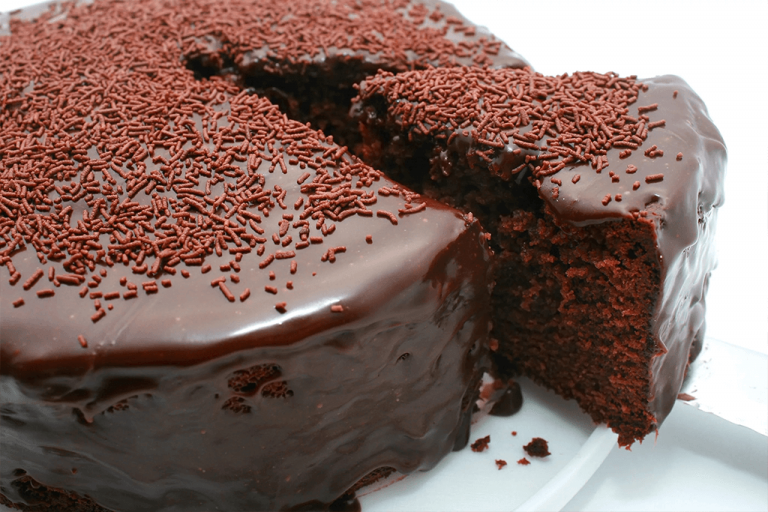

Bolo de Chocolate
Ingredientes
Massa
- 2 xícaras de farinha de trigo
- 3 ovos
- 1 xícara de açúcar mascavo
- 1 colher de sopa de fermento
- 1 xícara de leite
- ¹/² xícara de cacau 70%
- ¹/² xícara de óleo
- 1 colher de café de essência de baunilha
Cobertura
- 1 caixa de leite condensado
- ¹/² xícara de cacau 70%
- ¹/² xícara de manteiga
Modo de Preparo
Massa
Pré-aquença o forno a 180°
Unte e enfarinhe uma forma, reserve.
Misture todos os ingredientes secos de forma homogênea (acrescente só no final). Em seguida, acrescente todos os igredientes úmidos e misture bem até obter uma massa homogênea. Acrescente o fermento e misture bem, novamente.
Coloque a massa na forma untada e leve ao forno por 35-40 minutos a 210°
Cobertura
Para a cobertura, misture os ingredientes em uma panela e leve ao fogo baixo mexendo até desgrudar do fundo da panela.
Assim que o bolo estiver assado, desenforme e cubra o bolo com a cobertura.